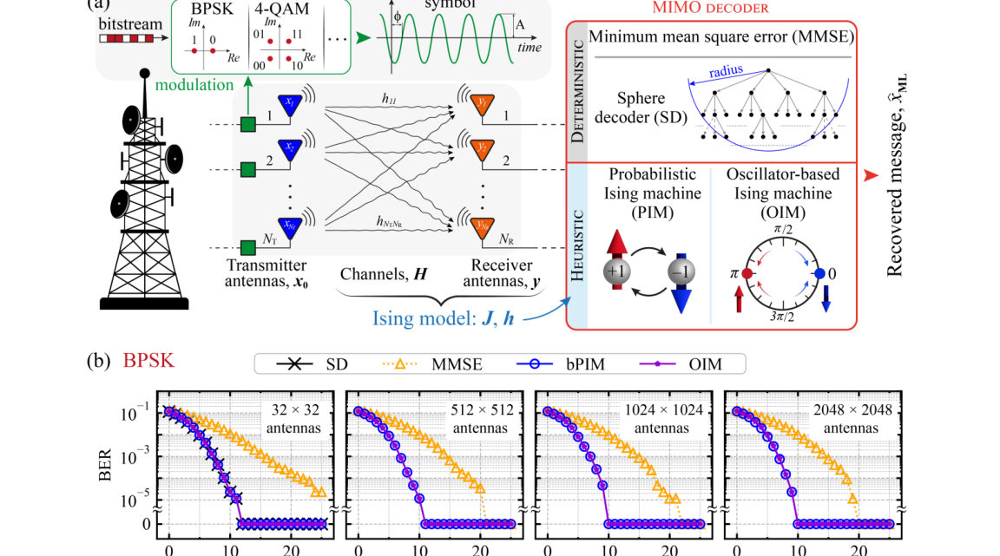
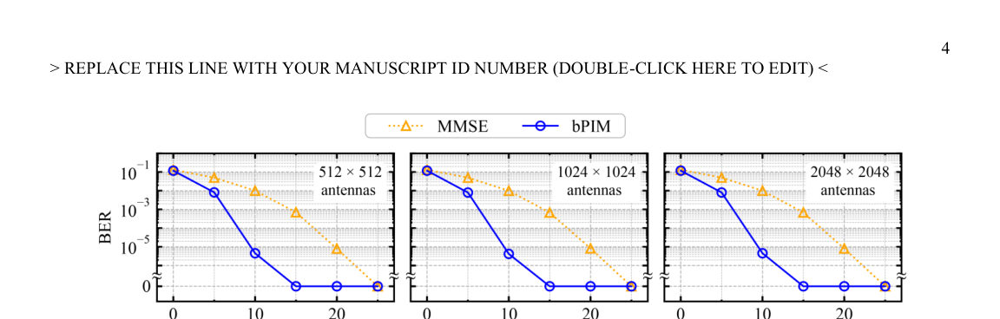
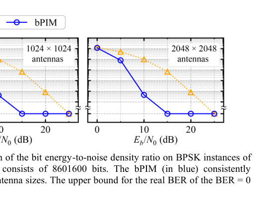
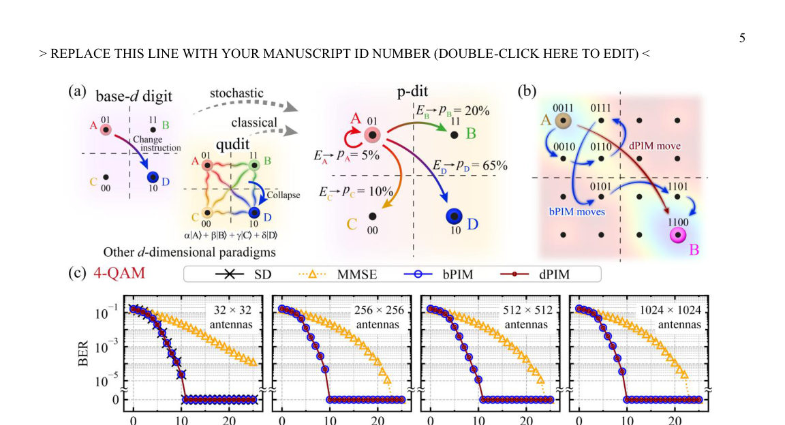
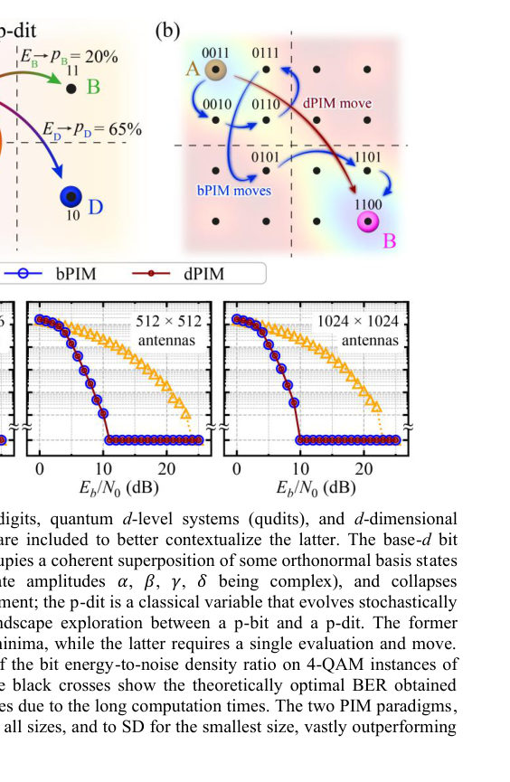

Authors: Andrea Grimaldi, Christian Duffee, Eleonora Raimondo, Edoardo Piccolo, Deborah Volpe, Filip B. Maciejewski, Mario Carpentieri, Massimo Chiappini, Pedram Khalili Amiri, Davide Venturelli, Giovanni Finocchio
Type: both · Category: disordered systems and neural networks · PDF: https://arxiv.org/pdf/2605.07884v1
Analysis basis: full PDF text, analyzed in chunks





Summary. This paper proposes using physics-inspired Ising machines to solve the complex signal detection problem in future 6G wireless networks. By mapping MIMO detection to an Ising Hamiltonian, the authors demonstrate that probabilistic and oscillator-based computing can match optimal performance for massive antenna arrays while remaining computationally efficient.
Why it may be interesting. The paper explores the use of Ising machines and p-bits—tools often studied in the context of spin glasses and probabilistic computing—to solve high-dimensional optimization problems, demonstrating how physical dynamics can replace traditional algorithmic complexity.
Main problem. The computational bottleneck of optimal Maximum-Likelihood (ML) detection in Extremely Large-Scale MIMO (XL-MIMO) for 6G wireless networks, where complexity grows exponentially with antenna count and modulation order.
Main result. Probabilistic Ising Machines (PIMs) and Oscillator-based Ising Machines (OIMs) achieve optimal detection for BPSK up to 2048x2048 antennas, while a new d-dimensional p-dit (dPIM) framework enables efficient, scalable detection for high-order QAM modulations.
Method. The MIMO detection problem is mapped onto an Ising Hamiltonian and solved using simulated annealing, Markov Chain Monte Carlo (MCMC) with Gibbs sampling, and the Kuramoto model for oscillators.
Model / system. The system uses physics-inspired computing architectures, specifically Probabilistic Ising Machines (p-bit based) and Oscillator-based Ising Machines (coupled oscillators), to minimize an Ising Hamiltonian derived from the MIMO energy functional.
Key observables. Bit-Error Rate (BER), average final energy, and the scaling of the optimal annealing parameter (beta_max).
Important parameters / regimes. Antenna scale (up to 2048x2048), modulation order (BPSK to 256-QAM), inverse temperature (beta), and signal-to-noise ratio (Eb/N0).
Assumptions / limitations. The channel is assumed to be quasi-static, and the noise is modeled as additive white Gaussian noise (AWGN).
Figures summary. Figures illustrate the conceptual difference between p-bits and qudits, the energy landscape exploration, the scaling of the optimal annealing parameter with antenna count, and BER performance comparisons against MMSE and SD benchmarks.
Paper structure. The paper introduces the 6G XL-MIMO challenge, presents three Ising-based computing paradigms (bPIM, OIM, dPIM), details the Hamiltonian mapping and scaling laws for annealing parameters, and concludes with performance benchmarks and scalability analysis.
Extremely large-scale multiple-input multiple-output (XL-MIMO) architectures are a key enabler of forthcoming 6G wireless communication networks by allowing high data rates through massive spatial multiplexing. Here, we approach these problems with physics-inspired unconventional computing based on Ising machines (IMs). For binary modulation, probabilistic IMs (PIMs) and oscillator-based IMs achieve optimal ML detection with systems up to 2048x2048 antennas with only 100 iterations, matching optimal sphere decoder performance for computationally treatable sizes and outperforming the minimum mean-square error (MMSE) industrial standard. For M-QAM up to 256, a generalized PIM-inspired framework, based on d-dimensional probabilistic variables (p-dits) that directly encode QAM symbols, shows low bit-error-rate across sizes up to 256x256 antennas, outperforming or matching MMSE with reduced algorithmic complexity. Unlike the binary mapping, the p-dit interaction matrix is independent of the QAM order, enabling adaptive MIMO modulation. These results show a promising scalable paradigm for XL MIMO detection in future 6G networks.
Authors: Yudi Yang, Changming Ke, Shi Liu
Type: theory · Category: other · PDF: https://arxiv.org/pdf/2605.07382v1
Analysis basis: abstract only; PDF text extraction failed or PDF unavailable
Summary. This review explores how ferroelectricity can exist in non-polar space groups through fractional quantum and ionic-conductor mechanisms. By applying the Berry-phase theory, the authors show that polarization is a multivalued quantity that can change via quantized charge transfer. This suggests that the true potential of these materials lies in controlling charged interfaces and domain walls.
Why it may be interesting. not directly relevant
Main problem. The paper addresses the challenge to the conventional symmetry-based paradigm of ferroelectricity, where switchable polarization is traditionally thought to require polar space groups.
Main result. The authors reconcile fractional quantum and ionic-conductor ferroelectricity by treating polarization as a multivalued lattice quantity and linking ionic transport to quantized charge transfer via the topological definition of oxidation state.
Method. The review utilizes the Berry-phase modern theory of polarization and a generalized Neumann principle to analyze non-polar crystals and adiabatic paths.
Model / system. The study focuses on insulating periodic crystals, specifically mentioning fractional quantum ferroelectrics, ionic-conductor ferroelectrics, and systems like alpha-In2Se3.
Key observables. Formal polarization, polarization quantum, and changes in polarization via ion migration.
Important parameters / regimes. Polarization quantum, adiabatic paths, and switching pathways.
Assumptions / limitations. The framework assumes the validity of the Berry-phase modern theory of polarization for insulating periodic crystals.
Paper structure. The paper introduces emerging ferroelectric phenomena, reconciles them using the Berry-phase theory and a generalized Neumann principle, connects ion migration to topological oxidation states, discusses physical accessibility (switching/boundaries), and concludes with future functional directions.
Ferroelectricity, a hallmark of spontaneous inversion-symmetry breaking, has been a central concept in condensed matter physics and functional materials research, yet recent discoveries are revealing that switchable polarization can emerge in forms far richer than allowed by the conventional symmetry-based paradigm. Fractional quantum ferroelectricity and ionic-conductor ferroelectricity challenge the long-standing association of ferroelectricity exclusively with polar space groups. In this Review, we reconcile these emerging phenomena within the Berry-phase modern theory of polarization. We emphasize that polarization in insulating periodic crystals is not a single-valued vector, but a multivalued lattice quantity defined modulo a polarization quantum. Consequently, nonpolar crystals may possess nonzero formal polarization, and adiabatic paths connecting symmetry-equivalent structures can produce quantized changes in polarization without violating symmetry principles. The symmetry of this multivalued formal polarization is governed by a generalized Neumann principle. We further show that the large polarization changes induced by long-range ion migration in both fractional quantum ferroelectrics and ionic-conductor ferroelectrics can be naturally understood through the topological definition of oxidation state, which links ionic transport to quantized charge transfer and polarization change. We discuss the physical accessibility of these unconventional polarization states, highlighting the roles of switching pathways, boundary conditions, and domain-wall dynamics, particularly in systems such as $α$-In$_2$Se$_3$. Finally, we suggest that the most promising functionality of these materials may lie not in conventional bulk ferroelectric switching, but in the creation and control of charged interfaces and domain walls arising from discontinuities in formal polarization.
Authors: Prajwal Pisal, Ondřej Krejčí, Patrick Rinke
Type: theory · Category: disordered systems and neural networks · PDF: https://arxiv.org/pdf/2605.07714v1
Analysis basis: abstract only; PDF text extraction failed or PDF unavailable
Summary. This paper introduces a new framework to predict the catalytic performance of alloy nanocatalysts by resolving adsorption energies at the specific crystal facet level. By using machine-learned force fields to screen thousands of surfaces, the authors identify specific alloy compositions optimized for CO2 hydrogenation to methanol. This approach enables more precise rational design of heterogeneous catalysts.
Why it may be interesting. not directly relevant
Main problem. The inability of previous adsorption energy distribution (AED) approaches to resolve facet-specific contributions in nanocatalysts, which limits the prediction of catalytic activity and selectivity.
Main result. The development of a facet-resolved framework that identifies highly active and methanol-selective facets across a vast library of alloy compositions.
Method. The researchers used universal machine-learned force fields trained on Open Catalyst Project data and applied statistical and unsupervised learning techniques to analyze adsorption energetics.
Model / system. A large-scale computational study of 226 metals, binary alloys, and ternary alloys, covering 1.4 million adsorption sites across 2,626 crystallographically distinct surfaces.
Key observables. Adsorption energy distributions (AEDs), catalytic activity, and selectivity toward C1 products (specifically methanol).
Important parameters / regimes. Crystallographic facets (Miller planes), alloy composition, and adsorption energies.
Assumptions / limitations. The use of machine-learned force fields as a reliable proxy for true quantum mechanical adsorption energetics.
Paper structure. The paper introduces the problem of facet-specific catalysis, describes the implementation of a facet-resolved framework using machine-learned force fields, presents the statistical analysis of adsorption energy distributions, and concludes with identified alloy compositions for experimental validation.
Adsorption energy distributions (AEDs) have emerged as a powerful and increasingly adopted descriptor for catalytic performance in high-entropy alloys and, more recently, in conventional metallic alloy nanocrystal catalysts. By accounting for diverse adsorption sites and crystallographic facets, AEDs more fully represent nanoparticle-based catalytic surfaces and show strong promise for accelerating rational design and discovery of heterogeneous catalysts, especially for CO$_2$ hydrogenation. However, previous approaches have not sufficiently resolved facet-specific contributions, despite the catalytic significance and prevalence of certain Miller planes in nanoscale catalysts, limiting their applicability in predicting activity and selectivity. Here, we introduce an updated facet-resolved framework for predicting catalytic activity, which also enables insight into selectivity toward C1 products. Universal machine-learned force fields trained on Open Catalyst Project data were employed to compute adsorption energetics across 226 experimentally observed metals, binary alloys, and ternary alloys, encompassing 1.4 million adsorption sites on 2,626 crystallographically distinct surfaces. Using statistical and unsupervised learning techniques, we analyzed facet-specific AEDs to identify highly active and methanol-selective facets. Our approach provides insight into the relationship between structure and catalytic performance metrics like activity and selectivity, and presents a set of alloy compositions and their respective surface orientations for experimental validation toward highly selective CO$_2$ hydrogenation.
Authors: Luca Lezuo, Andrea Conti, Alexander Hoheneder, Elena Vaníčková, Domitilla Alessandra Aloi, Rainer Abart, Florian Mittendorfer, Michael Schmid, Ulrike Diebold, Giada Franceschi
Type: both · Category: other · PDF: https://arxiv.org/pdf/2605.07337v1
Analysis basis: abstract only; PDF text extraction failed or PDF unavailable
Summary. This study uses AFM and DFT to map how water molecules arrange themselves on a calcium silicate surface. It reveals that at low densities, water follows the mineral's lattice, but at higher densities, hydrogen bonding takes over to form clusters. This provides a fundamental atomic-scale understanding of processes like mineral weathering and cement hydration.
Why it may be interesting. not directly relevant
Main problem. Understanding the structural evolution of water overlayers on the wollastonite (100) surface and the competition between water-surface and water-water interactions.
Main result. Identified distinct water structures at different coverages, ranging from surface-lattice-following adsorbates at low density to the formation of water clusters at high density due to dominant hydrogen bonding.
Method. Combination of atomically resolved non-contact atomic force microscopy (nc-AFM) in ultrahigh vacuum and density functional theory (DFT) calculations using the r2SCAN+rVV10 functional.
Model / system. The (100) surface of wollastonite (CaSiO3), a model calcium silicate, interacting with incremental doses of water at cryogenic temperatures.
Key observables. Atomic-scale surface structures, adsorption patterns, and symmetry of water overlayers.
Important parameters / regimes. Water coverage (molecules per surface unit cell), temperature (cryogenic), and the balance between water-surface and water-water interaction energies.
Assumptions / limitations. The use of the r2SCAN+rVV10 metaGGA functional for DFT calculations; the study focuses on a model surface to represent broader silicate weathering processes.
Paper structure. The paper presents an investigation of water adsorption on a silicate surface, moving from experimental nc-AFM observations of different coverage regimes to theoretical DFT validation and structural modeling.
Water adsorption on silicate surfaces is a critical yet poorly understood process relevant to, e.g., mineral weathering and cement hydration. This study investigates the structure of water overlayers on a model calcium silicate, the lowest-energy (100) surface of wollastonite (CaSiO3). It combines atomically resolved non-contact atomic force microscopy (nc-AFM), acquired with qPlus sensors and functionalized tips in ultrahigh vacuum (UHV), with density functional theory (DFT) calculations employing the metaGGA r2SCAN+rVV10 functional. Adding incremental doses of water to the sample at cryogenic temperatures produces distinct structures governed by the competition between water-surface and water-water interactions. With two water molecules per surface unit cell, water-surface interactions dominate: In line with previous theoretical predictions, adsorbates follow the surface lattice. As the coverage increases, intermolecular hydrogen bonding competes with bonding to the surface, leading to the emergence of complex, coexisting patterns. While their small energy differences prevent an unambiguous identification of the most stable structure by DFT, the experimentally observed symmetries help constrain plausible structural models. Above a critical density of four water molecules per unit cell, water-water interactions prevail, and water clusters are formed. The results provide an atomic-scale framework for understanding water interactions with calcium silicate surfaces.